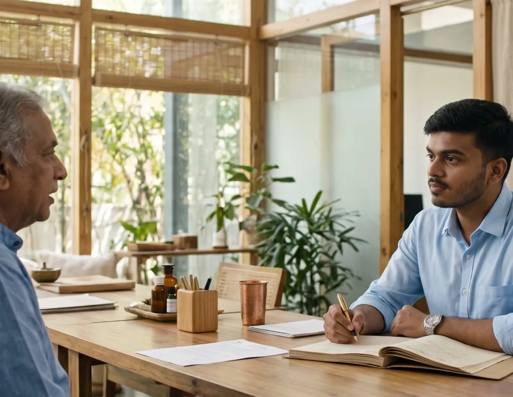
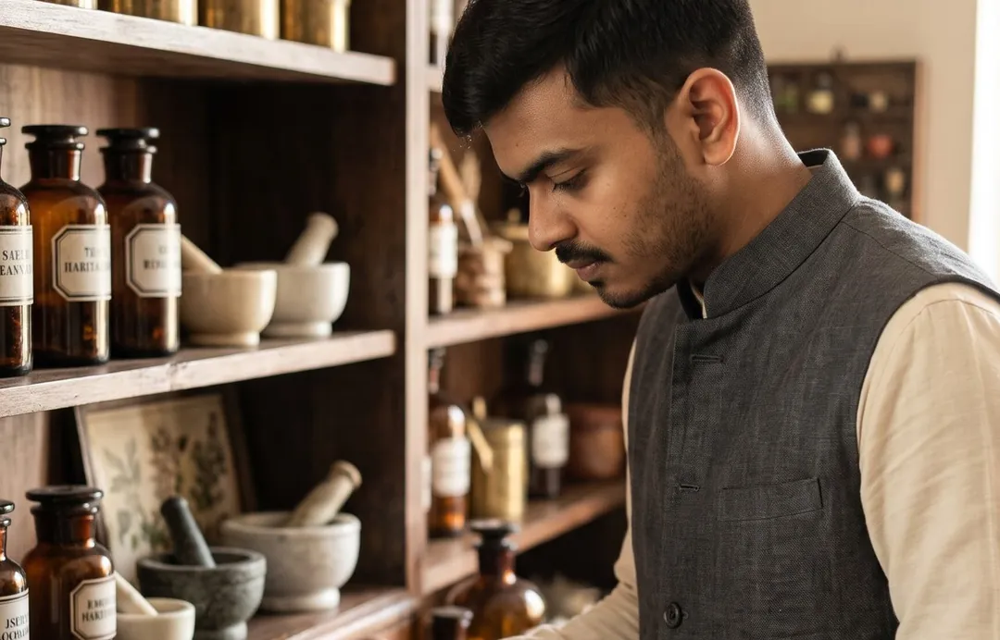

Best Panchakarma for patients from Jharkhand
Let us be clear from the first line: Sabka Ved Wellness is in Patna, near Bajrang Puri, in Bihar. We do not have a branch in Ranchi, Jamshedpur or anywhere else in Jharkhand. This page exists because people from Jharkhand do search for Panchakarma further afield, and if Patna makes sense for you, we want you to be able to plan it properly, with no surprises.
Below you will find what to check in any Panchakarma programme, how the online consultation works, how people from Jharkhand typically plan the trip, and what happens once you arrive.
Looking for the best Panchakarma for patients from Jharkhand? Here is the standard
Whatever city you choose, a good Panchakarma programme has the same foundations. The classical texts are clear that cleansing therapy is a medical act. Charaka Samhita describes in detail who is fit for each of the five actions (vamana, virechana, anuvasana basti, niruha basti and nasya), how they should be prepared, how the doctor recognises a good response and what to do if something goes wrong. Sushruta Samhita adds raktamokshana for certain conditions. Ashtanga Hridaya, from around the 7th century CE, summarises the same sequence.
Translate that into a modern checklist and you get:
- A qualified Ayurvedic doctor (BAMS or above) assesses you before anything is booked
- The programme is planned for you, not sold as a fixed package
- Preparation, main procedure and recovery are all included, in order
- Contraindications are screened honestly, including your current medicines
- You are told what the programme includes and what you will eat afterwards
At Sabka Ved Wellness, every programme is planned by Dr. Aditya Kunal, BAMS, who has more than five years of clinical practice and a particular focus on gut and metabolic health. Main cleansing procedures are done under his supervision.
Why travel matters more for Panchakarma than for a check-up
A consultation is one visit. A Panchakarma programme can be a week or three. The preparation phase involves daily oleation, massage and sweating, and the texts advise rest, warm food and avoiding exertion and long journeys during this time. On the day of vamana or virechana, and for the days of graded diet afterwards, you will be tired and eating very light food.
That is why we do not recommend travelling back and forth between Jharkhand and Patna during a cleansing programme. The sensible approach is to do everything you can from home, then come once and stay for the treatment days.
How patients from Jharkhand usually plan Panchakarma in Patna
Step 1: Online consultation
Book through the online link and share your reports, medicine list and main concerns. Dr. Aditya Kunal takes a detailed history over the call: digestion, appetite, bowel pattern, sleep, energy, past illnesses and, for women, menstrual history and pregnancy status. Some things, like pulse and abdominal examination, can only be done in person, so the plan is confirmed when you arrive.
Step 2: A plan and honest advice
You will hear whether Panchakarma looks suitable, which procedures are likely and roughly how many days to keep free. Sometimes the advice is that you do not need a cleansing programme at all, or that it should wait for a better season or until another condition is controlled. That is part of honest screening.
Step 3: Preparation at home
Depending on the plan, you may begin diet changes or digestive preparation (deepana and pachana) at home a few days before travelling. This can shorten the time you need to spend in Patna.
Step 4: The trip
Ranchi, Jamshedpur, Dhanbad, Bokaro and Hazaribagh are connected to Patna by train, and Ranchi also has flights to Patna. Patna Junction is the main railway station, and the centre is in the city near Bajrang Puri. Most people stay with relatives or at a nearby guest house so that they can rest between sessions.
Step 5: Treatment days
Your plan is confirmed in person, then preparation, main procedure and early recovery happen under supervision.
Step 6: Recovery at home
You go home with written guidance on the graded diet (samsarjana krama), daily routine and any medicines, and you can follow up online.
Getting the most from your days in Patna
Patients who travel for Panchakarma sometimes treat the trip like a holiday or a chance to finish errands in the city. That works against the treatment. The classical texts give a list of things to avoid during and after cleansing: loud talking, long travel, sitting or standing for long periods, daytime sleep, late nights, exposure to cold wind, heavy or incompatible food, sexual activity and suppressing natural urges. The reasoning is that a body undergoing oleation and cleansing is temporarily more open and more easily disturbed.
In practical terms, that means staying somewhere quiet, close to the centre, eating simple warm food, keeping phone and screen time modest, and going to bed early. A family member who can cook khichdi and rice gruel, and who understands why you are resting, makes a real difference.
Coming home: food in Jharkhand after a cleanse
After virechana or vamana, the graded diet begins with thin rice gruel and moves step by step through thicker gruel, soups and soft khichdi before normal meals return. Home kitchens in Jharkhand already have most of what you need: rice, moong dal, ghee, jeera, ginger and seasonal vegetables. What needs care is the return to heavier everyday foods. Deep-fried snacks, very spicy curries, meat, fermented drinks, alcohol and very cold or stale food are best kept away until the doctor says your digestion has recovered. You will be given a written plan that tells you what to add and when.
A sample timeline, for understanding only
| Stage | Where | What happens |
|---|---|---|
| Week before travel | Home in Jharkhand | Online consultation, reports reviewed, preparation advice |
| Arrival | Patna | In-person examination, plan confirmed |
| Preparation days | Patna | Oleation, abhyanga and swedana as advised |
| Main procedure | Patna | Cleansing under doctor supervision |
| Early recovery | Patna | Graded diet begins, rest, review |
| After return | Home | Diet completed, follow-up online |
This is an illustration, not a prescription. Some people need only a few external therapies and a short visit; others need a longer programme. The doctor decides.
What Panchakarma is used for, and what it is not
People commonly ask about Panchakarma for long-standing digestive trouble such as acidity, bloating and irregular bowels; for weight and metabolic concerns; for stiffness and pain; for skin complaints; and for stress and poor sleep. In Ayurvedic terms many of these trace back to weak agni (digestive fire) and accumulated ama. Panchakarma is used to support the body in such conditions, alongside diet, routine and medicines. It is not a cure for any disease, and anyone who promises one is breaking the law in India.
The evidence base is still developing. A small 2009 observational study of a five-day programme found improvements in health behaviours, self-efficacy and some psychological measures, though not in overall quality of life. A 2016 study in Scientific Reports found shifts in blood metabolite profiles after a Panchakarma-based programme in healthy adults. These are early findings, presented honestly.
Who should talk to us before planning a trip
- Pregnant women or those planning pregnancy soon
- People with heart disease, uncontrolled blood pressure or uncontrolled diabetes
- Anyone on blood thinners, steroids or several long-term medicines
- People recovering from surgery, serious illness or significant weight loss
- The elderly and the very weak
Some of these situations rule out particular procedures; others only need adjustments. Either way, the doctor needs to know before you book train tickets.
Questions people from Jharkhand often ask
Is there a cheaper option closer to home?
Possibly. Use the checklist above to judge any centre near you. If a closer centre meets it, that may be more practical. If you choose Patna, our separate guide on why Panchakarma costs what it does explains the cost drivers so you can compare fairly.
Do I need Panchakarma at all?
Not necessarily. Many digestive and lifestyle complaints respond to diet, routine and oral medicines alone, and the consultation may end with exactly that advice. Panchakarma is a tool for specific situations, not a ritual everyone must go through. Choosing not to travel because you do not need to is a perfectly good outcome of a consultation.
Will my reports from Ranchi or Dhanbad be accepted?
Yes. Recent reports from any accredited laboratory are useful. If a test is missing, the doctor may ask you to get it done near home before you travel, which saves time in Patna.
Can a family member accompany me?
Yes, and for the main cleansing days we encourage it.
What if I feel unwell after returning home?
Contact the centre. Follow-up is part of the plan, and if anything feels serious, see a local doctor or go to a hospital immediately.
Start with a consultation
If you are in Jharkhand and considering Panchakarma in Patna, the first step costs you no travel. Book an online consultation at superprofile.bio/bookings/dradityakunal, or request a slot through our appointment page. Keep taking your prescribed medicines; any change is for you and your treating doctors to decide together.
Sources
- Panchakarma, Central Council for Research in Ayurvedic Sciences (CCRAS)
- Conboy L et al. Ayurveda and Panchakarma: measuring the effects of a holistic health intervention. ScientificWorldJournal, 2009
- Peterson CT et al. Altered metabolomic profiles following a Panchakarma-based Ayurvedic intervention in healthy subjects. Sci Rep, 2016
- National Commission for Indian System of Medicine (NCISM)
Therapies we offer


Preparation, therapy, recovery. In that order.


Read next
Pages that pair naturally with this one.


Questions people ask

No. The centre is in Patna, Bihar, near Bajrang Puri. Patients from Jharkhand usually consult online first and then plan one trip to Patna for the treatment days.
Ranchi, Jamshedpur, Dhanbad, Bokaro and Hazaribagh have train connections to Patna, and Ranchi also has flights. Plan to stay in Patna for the full treatment and early recovery days.
It depends on the programme. External therapies may need only a few days, while classical cleansing with preparation and recovery can need one to three weeks. The doctor gives an estimate after the online consultation.
Sometimes diet changes and digestive preparation can begin at home before you travel. Oleation, massage and the main cleansing are done at the centre under supervision.
It is better not to. The body is tired and digestion is delicate for a few days afterwards, which is why we advise staying in Patna for the early recovery period.